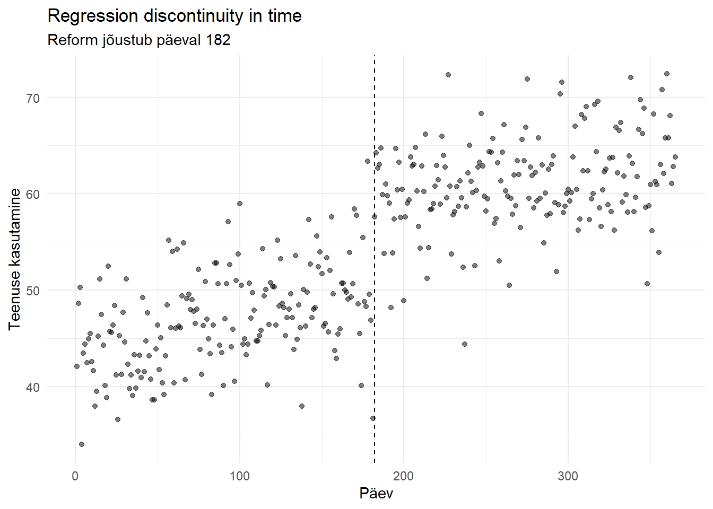
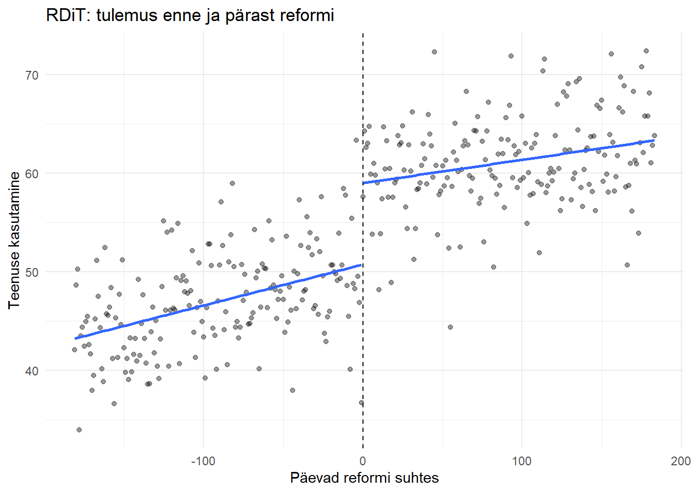

library(dplyr)
library(ggplot2)
library(lmtest)
library(sandwich)
set.seed(1234)
# Päevad
n <- 365
t <- 1:n
# Reform toimub päeval 182
c0 <- 182
# Aeg lõikepunkti suhtes
tc <- t - c0
# Reformijärgne periood
D <- as.integer(t >= c0)
# Nädalapäev
weekday <- factor((t - 1) %% 7 + 1)
# Tegelik reformi mõju
tau <- 8
# Väljund
Y <- 50 +
0.03 * tc + # sujuv ajatrend
tau * D + # reformi mõju
3 * sin(2 * pi * t / 7) + # nädalane hooajalisus
rnorm(n, mean = 0, sd = 4)
df_time <- data.frame(
t = t,
tc = tc,
D = D,
weekday = weekday,
Y = Y
)7 Regressiooni katkemine ajas
RDD erijuht on regressiooni katkemine ajas (Regression Discontinuity in Time, RDiT). Tavapärases RDD-s määrab meetmes osalemise mingi pidev tunnus \(X_i\), näiteks vanus, sissetulek või testi tulemus. RDiT korral on jooksva tunnuse rollis aeg ning meede hakkab kehtima kindlast ajahetkest.
Näiteks:
- uus maks jõustub 1. jaanuaril;
- uus ravimite hüvitamise kord hakkab kehtima 1. juulil;
- kiiruspiirang kehtestatakse kindlal kuupäeval;
- haigla võtab kindlal kuupäeval kasutusele uue ravijuhendi;
- elektrihinna reform jõustub kindlal kuupäeval.
RDiT põhiidee on võrrelda tulemust vahetult enne ja pärast reformi jõustumise hetke.
7.1 RDiT tähistused
Olgu
- \(Y_t\) – tulemus ajahetkel \(t\);
- \(T_t\) – aeg ehk jooksev tunnus;
- \(c\) – reformi jõustumise ajahetk;
- \(D_t\) – näitaja, kas vaatlus pärineb reformijärgsest perioodist.
Järsu RDiT korral:
\[ D_t = \begin{cases} 0, & T_t<c,\\ 1, & T_t\geq c. \end{cases} \]
Näiteks kui reform jõustub 1. juulil, siis kõik enne 1. juulit toimunud vaatlused kuuluvad reformieelsesse perioodi ja kõik alates 1. juulist reformijärgsesse perioodi.
Nagu tavapärase RDD puhul, tsentreerime jooksva tunnuse lõikepunkti suhtes:
\[ \widetilde T_t=T_t-c. \]
Lõikepunktis on seega
\[ \widetilde T_t=0. \]
RDiT mõju
RDiT hinnang saadakse tulemuse tingliku keskväärtuse hüppest reformi jõustumise hetkel:
\[ \tau^{RDiT} = \lim_{t\downarrow c}E(Y_t\mid T_t=t) - \lim_{t\uparrow c}E(Y_t\mid T_t=t). \]
Esimene liige kirjeldab tulemust vahetult pärast reformi ja teine vahetult enne reformi.
Kui ilma reformita oleks tulemus aja jooksul lõikepunkti ümbruses sujuvalt muutunud, võib seda hüpet tõlgendada reformi lokaalse põhjusliku mõjuna.
Potentsiaalsete tulemuste keeles vajame eeldust
\[ \lim_{t\downarrow c}E(Y_t^0\mid T_t=t) = \lim_{t\uparrow c}E(Y_t^0\mid T_t=t). \]
See tähendab, et reformi puudumisel ei oleks tulemus täpselt hetkel \(c\) hüppeliselt muutunud.
Sellisel juhul:
\[ \tau^{RDiT} = E(Y_c^1-Y_c^0). \]
Tegemist on lokaalse mõjuga reformi jõustumise ajahetkel.
Regressioonimudel
Lihtsa lokaalse lineaarse mudeli võime kirjutada kujul
\[ Y_t = \alpha + \delta D_t + \beta_0\widetilde T_t + \beta_1D_t\widetilde T_t + \varepsilon_t. \]
Enne reformi, \(D_t=0\):
\[ E(Y_t\mid T_t) = \alpha+\beta_0\widetilde T_t. \]
Pärast reformi, \(D_t=1\):
\[ E(Y_t\mid T_t) = \alpha+\delta+ (\beta_0+\beta_1)\widetilde T_t. \]
Kuna lõikepunktis \(\widetilde T_t=0\), on kahe regressioonijoone erinevus
\[ \delta. \]
Seega on \(\delta\) RDiT hinnang reformi vahetule mõjule.
Nagu tavalise RDD puhul, on mõistlik hinnata mudelit eelkõige lõikepunkti lähedal:
\[ |\widetilde T_t|\leq h, \]
kus \(h\) on valitud ajavahemik ehk ribalaius (bandwidth).
Näiteks võime kasutada ainult 30 päeva enne ja 30 päeva pärast reformi.
Mille poolest sarnaneb RDiT tavalise RDD-ga?
Matemaatiliselt on kaks disaini väga sarnased.
| Tavaline RDD | RDiT |
|---|---|
| Jooksev tunnus \(X_i\) | Aeg \(T_t\) |
| Lõikepunkt \(c\) | Reformi jõustumise aeg \(c\) |
| \(D_i=1(X_i\geq c)\) | \(D_t=1(T_t\geq c)\) |
| Võrdleme vaatlusi lõikepunkti lähedal | Võrdleme vaatlusi reformi aja lähedal |
| Lubame trendil olla kahel pool erinev | Lubame ajatrendil olla enne ja pärast erinev |
| Mõju on hüpe lõikepunktis | Mõju on hüpe reformi hetkel |
| Oluline on ribalaiuse valik | Oluline on ajavahemiku valik |
Mõlemal juhul püüame eristada kahte asja:
- tulemuse sujuvat muutumist jooksva tunnuse suhtes;
- diskreetset hüpet lõikepunktis.
Mille poolest RDiT erineb tavalisest RDD-st?
Vaatamata matemaatilisele sarnasusele on RDiT identifitseerimise seisukohalt tavalisest RDD-st problemaatilisem.
1. Aeg ise määrab täielikult, kumb vaatlus on enne ja kumb pärast
Tavalises RDD-s võime võrrelda näiteks inimesi sissetulekuga 999 ja 1001 eurot. Nad võivad paljude muude omaduste poolest olla väga sarnased.
RDiT korral võrdleme aga erinevaid ajahetki. Näiteks 30. juunit ja 1. juulit ei saa käsitleda päris samamoodi nagu kahte peaaegu identse sissetulekuga inimest.
Aeg liigub ainult ühes suunas ning pärast reformi toimunud vaatlus ei oleks saanud toimuda enne reformi.
2. Samal ajal võivad muutuda teised tegurid
See on RDiT üks olulisemaid probleeme.
Kui reform toimub ajahetkel \(c\), siis peab põhjuslikuks tõlgenduseks kehtima, et ükski teine tulemust mõjutav tegur ei muutu samal hetkel hüppeliselt.
Näiteks oletame, et 1. juulil:
- vähendatakse ravimite omaosalust;
- algab samal ajal puhkuste periood;
- haigla muudab töökorraldust;
- jõustub teine tervishoiureform.
Kui ravimite kasutamine muutub 1. juulil, ei saa me ilma täiendava informatsioonita olla kindlad, milline neist muutustest hüppe põhjustas.
Seetõttu on RDiT puhul eriti oluline uurida teisi samal ajal toimunud sündmusi ja poliitikamuutusi.
3. Hooajalisus
Paljud majandus- ja tervisenäitajad sõltuvad kalendrist.
Näiteks:
- töötus võib olla hooajaline;
- elektritarbimine sõltub aastaajast;
- haiglaravi sõltub nädalapäevast ja aastaajast;
- jaemüük muutub jõulude ajal;
- liiklusõnnetuste arv sõltub nädalapäevast ja aastaajast.
Kui reform toimub näiteks 1. jaanuaril, võivad enne ja pärast reformi erinevused kajastada osaliselt ka aastavahetuse või hooaja mõju.
Vajadusel võib mudelisse lisada näiteks nädalapäeva, kuu või muid kalendritunnuseid.
4. Vaatlused võivad olla ajaliselt sõltuvad
Tavalises ristandmetel põhinevas RDD-s on erinevate isikute vealiikmete sõltumatus sageli mõistlik lähtekoht.
Aegridades võib aga
\[ \operatorname{Cov}(\varepsilon_t,\varepsilon_{t-1})\neq0. \]
Näiteks tänane elektritarbimine, töötus või haiglaravi võib olla tugevalt seotud eilse väärtusega.
Seda nimetatakse autokorrelatsiooniks.
Seetõttu ei pruugi tavalised OLS standardvead RDiT korral olla korrektsed. Aegridade korral tuleks arvestada vealiikmete ajalise sõltuvusega, kasutades näiteks HAC ehk Newey–West standardvigu.
5. Manipulatsioonitest ei ole sageli oluline
Tavalises RDD-s küsime, kas inimesed saavad jooksva tunnuse väärtusega manipuleerida, et sattuda soovitud poolele lõikepunkti. Selleks kasutatakse näiteks McCrary tihedustesti.
Kalendriaega ennast ei saa tavaliselt manipuleerida. Seetõttu ei ole küsimus “Kas vaatlused kuhjuvad lõikepunkti ühele poole?” RDiT puhul sageli sisuline.
Samas võivad majandusagendid oma käitumise ajastust muuta, kui reform on ette teada. Näiteks võivad majapidamised teha autoostu enne automaksu tõusu või ettevõtjad võtta välja dividendid enne tulumaksu tõus. Sellisel juhul võib tekkida reformi ennetav käitumine (anticipation). Või
RDiT ja interrupted time series
RDiT on tihedalt seotud katkestatud aegrea analüüsiga (interrupted time series, ITS).
Näiteks mudel
\[ Y_t = \alpha + \delta D_t + \beta_0\widetilde T_t + \beta_1D_t\widetilde T_t + \varepsilon_t \]
on ka klassikaline interrupted time series mudel.
Interpretatsioon:
- \(\alpha\) – tulemuse tase vahetult enne reformi;
- \(\beta_0\) – reformieelne trend;
- \(\delta\) – vahetu taseme muutus reformi hetkel;
- \(\beta_1\) – trendi muutus pärast reformi.
RDiT rõhutab tavaliselt rohkem lokaalset võrdlust lõikepunkti ümbruses, samas kui interrupted time series kasutab sageli pikemat reformieelset ja reformijärgset aegrida ning modelleerib eksplitsiitselt selle dünaamikat.
7.2 Simuleeritud näide R-is
Oletame, et meil on igapäevased andmed mingi tervishoiuteenuse kasutamise kohta.
- juulil jõustub reform, mis vähendab patsiendi omaosalust. Eeldame, et selle tulemusena suureneb teenuse kasutamine kohe umbes 8 ühiku võrra päevas.
Lisaks on teenuse kasutamisel:
- väike kasvav ajatrend;
- nädalapäeva efekt;
- juhuslik varieeruvus.
Simuleerime ühe aasta päevased andmed.
Vaatame andmeid joonisel
ggplot(df_time, aes(x = t, y = Y)) +
geom_point(alpha = 0.5) +
geom_vline(
xintercept = c0,
linetype = "dashed"
) +
labs(
x = "Päev",
y = "Teenuse kasutamine",
title = "Regression discontinuity in time",
subtitle = "Reform jõustub päeval 182"
) +
theme_minimal()
Jooniselt peaks olema näha üldine ajatrend ja hüpe reformi jõustumise ajal.
Lisame eraldi regressioonijooned enne ja pärast reformi.
ggplot(df_time, aes(x = tc, y = Y)) +
geom_point(alpha = 0.4) +
geom_vline(
xintercept = 0,
linetype = "dashed"
) +
geom_smooth(
data = subset(df_time, tc < 0),
method = "lm",
se = FALSE
) +
geom_smooth(
data = subset(df_time, tc >= 0),
method = "lm",
se = FALSE
) +
labs(
x = "Päevad reformi suhtes",
y = "Teenuse kasutamine",
title = "RDiT: tulemus enne ja pärast reformi"
) +
theme_minimal()`geom_smooth()` using formula = 'y ~ x'
`geom_smooth()` using formula = 'y ~ x'
Lihtne regressioon kogu perioodil
Kõigepealt hindame
\[ Y_t = \alpha+ \delta D_t+ \beta_0\widetilde T_t+ \beta_1D_t\widetilde T_t+ \varepsilon_t. \]
m_time_all <- lm(
Y ~ D * tc,
data = df_time
)
summary(m_time_all)
Call:
lm(formula = Y ~ D * tc, data = df_time)
Residuals:
Min 1Q Median 3Q Max
-15.9378 -2.9369 -0.1161 3.0521 12.7743
Coefficients:
Estimate Std. Error t value Pr(>|t|)
(Intercept) 50.748590 0.678174 74.831 < 2e-16 ***
D 8.260462 0.951295 8.683 < 2e-16 ***
tc 0.041533 0.006463 6.426 4.13e-10 ***
D:tc -0.017884 0.009029 -1.981 0.0484 *
---
Signif. codes: 0 '***' 0.001 '**' 0.01 '*' 0.05 '.' 0.1 ' ' 1
Residual standard error: 4.543 on 361 degrees of freedom
Multiple R-squared: 0.7241, Adjusted R-squared: 0.7218
F-statistic: 315.8 on 3 and 361 DF, p-value: < 2.2e-16Kordaja D näitab hinnatud hüpet täpselt reformi jõustumise hetkel.
Kuna tegelik simuleeritud mõju oli
\[ \tau=8, \]
peaks hinnang olema ligikaudu 8.
Lokaalne RDiT
RDD loogika järgi ei pea me kasutama tervet aastat. Võime võrrelda näiteks ainult 30 päeva enne ja pärast reformi.
df_time_local <- df_time |>
filter(abs(tc) <= 30)Hindame sama mudeli selles lokaalses aknas:
m_time_local <- lm(
Y ~ D * tc,
data = df_time_local
)
summary(m_time_local)
Call:
lm(formula = Y ~ D * tc, data = df_time_local)
Residuals:
Min 1Q Median 3Q Max
-12.8454 -2.6596 0.2448 3.3751 13.8136
Coefficients:
Estimate Std. Error t value Pr(>|t|)
(Intercept) 49.5403773 1.8888695 26.228 < 2e-16 ***
D 10.0197200 2.5878313 3.872 0.000281 ***
tc -0.0006939 0.1063976 -0.007 0.994819
D:tc -0.0009435 0.1469000 -0.006 0.994898
---
Signif. codes: 0 '***' 0.001 '**' 0.01 '*' 0.05 '.' 0.1 ' ' 1
Residual standard error: 5.044 on 57 degrees of freedom
Multiple R-squared: 0.5117, Adjusted R-squared: 0.486
F-statistic: 19.91 on 3 and 57 DF, p-value: 5.943e-09Kordaja D on jälle hinnang reformi vahetule mõjule:
\[ \widehat{\tau}^{RDiT}=\widehat{\delta}. \]
Arvestame nädalapäeva
Kuna simuleeritud andmetes esineb nädalapäeva efekt, võime selle regressioonimudelisse lisada:
m_time_weekday <- lm(
Y ~ D * tc + weekday,
data = df_time_local
)
summary(m_time_weekday)
Call:
lm(formula = Y ~ D * tc + weekday, data = df_time_local)
Residuals:
Min 1Q Median 3Q Max
-13.593 -2.459 0.222 2.103 11.237
Coefficients:
Estimate Std. Error t value Pr(>|t|)
(Intercept) 52.009148 2.389359 21.767 < 2e-16 ***
D 9.598304 2.486047 3.861 0.00032 ***
tc 0.002288 0.102072 0.022 0.98221
weekday2 0.115568 2.271889 0.051 0.95963
weekday3 0.119943 2.344813 0.051 0.95940
weekday4 -3.816656 2.346471 -1.627 0.11000
weekday5 -4.496367 2.275139 -1.976 0.05354 .
weekday6 -4.770313 2.277105 -2.095 0.04117 *
weekday7 -3.004689 2.271889 -1.323 0.19189
D:tc 0.002164 0.140810 0.015 0.98780
---
Signif. codes: 0 '***' 0.001 '**' 0.01 '*' 0.05 '.' 0.1 ' ' 1
Residual standard error: 4.817 on 51 degrees of freedom
Multiple R-squared: 0.6016, Adjusted R-squared: 0.5312
F-statistic: 8.555 on 9 and 51 DF, p-value: 1.149e-07Nädalapäeva lisamine aitab eemaldada regulaarselt korduvaid kalendrierinevusi, mis ei ole reformi põhjustatud.
Autokorrelatsiooniga arvestavad standardvead
Aegridade puhul võivad järjestikuste päevade vealiikmed omavahel seotud olla. Üks võimalus on kasutada Newey–West standardvigu.
coeftest(
m_time_weekday,
vcov = NeweyWest(
m_time_weekday,
lag = 7,
prewhite = FALSE
)
)
t test of coefficients:
Estimate Std. Error t value Pr(>|t|)
(Intercept) 52.0091480 1.2011763 43.2985 < 2.2e-16 ***
D 9.5983040 2.1872589 4.3883 5.754e-05 ***
tc 0.0022876 0.0710605 0.0322 0.97444
weekday2 0.1155683 1.3603405 0.0850 0.93263
weekday3 0.1199426 2.5691740 0.0467 0.96295
weekday4 -3.8166561 1.9287385 -1.9788 0.05325 .
weekday5 -4.4963673 0.7486519 -6.0060 2.008e-07 ***
weekday6 -4.7703135 1.9468195 -2.4503 0.01774 *
weekday7 -3.0046893 1.4710274 -2.0426 0.04628 *
D:tc 0.0021636 0.0830518 0.0261 0.97932
---
Signif. codes: 0 '***' 0.001 '**' 0.01 '*' 0.05 '.' 0.1 ' ' 1Punktihinnangud jäävad samaks, kuid standardvead arvestavad nüüd võimalikku ajalist sõltuvust.
RDiT hinnang rdrobust abil
Kuna matemaatiliselt on tegemist RDD-ga, võime lokaalse regressiooni hinnata ka rdrobust abil:
library(rdrobust)
rd_time <- rdrobust(
y = df_time$Y,
x = df_time$t,
c = c0,
p = 1
)
summary(rd_time)Sharp RD estimates using local polynomial regression.
Number of Obs. 365
BW type mserd
Kernel Triangular
VCE method NN
Number of Obs. 181 184
Eff. Number of Obs. 72 73
Order est. (p) 1 1
Order bias (q) 2 2
BW est. (h) 72.840 72.840
BW bias (b) 112.373 112.373
rho (h/b) 0.648 0.648
Unique Obs. 181 184
=====================================================================
Point Robust Inference
Estimate z P>|z| [ 95% C.I. ]
---------------------------------------------------------------------
RD Effect 9.648 3.857 0.000 [4.917 , 15.077]
=====================================================================Siin on:
Y– väljund;t– jooksev tunnus ehk aeg;c0– reformi jõustumise aeg.
rdrobust käsitleb aega formaalselt samamoodi nagu ükskõik millist muud RDD jooksvat tunnust ning valib lõikepunkti ümber lokaalse ribalaiuse.
Ettevaatust: rdrobust kasutamine ei lahenda iseenesest RDiT spetsiifilisi identifitseerimisprobleeme. Eelkõige tuleb eraldi mõelda hooajalisusele, autokorrelatsioonile, teistele samal ajal toimunud muutustele ning reformi võimalikule ennetamisele.
Millal võib RDiT anda eksitava tulemuse?
Kõige olulisem probleem tekib siis, kui reformiga samal ajal toimub veel midagi.
Oletame näiteks, et meie reform jõustub täpselt hetkel, mil algab suvepuhkuste periood, ning puhkused suurendavad samuti uuritavat tulemust.
Siis võime vaadelda hüpet
\[ \Delta Y = \tau_{\text{reform}} + \tau_{\text{muu muutus}}. \]
RDiT näeb ainult koguhüpet \(\Delta Y\) ega suuda ühe aegrea põhjal neid kahte mõju üksteisest eristada.
Seetõttu on RDiT põhjuslik eeldus sisuliselt:
Kui reformi poleks toimunud, oleks tulemuse areng jätkunud reformi jõustumise hetkel sujuvalt.
See eeldus ei ole otseselt testitav.
Usaldusväärsuse suurendamiseks võiks RDiT analüüsis:
- joonistada pikk reformieelne ja reformijärgne aegrida;
- proovida erinevaid ribalaiuseid;
- kontrollida hooajalisust ja kalendrimõjusid;
- uurida, kas samal ajal toimus muid poliitika- või majandusmuutusi;
- kasutada platseebo-lõikepunkte;
- kontrollida, kas tulemus hakkab muutuma juba enne reformi;
- arvestada standardvigades aegrea autokorrelatsiooniga.
RDiT põhiidee kokkuvõttes
Tavalise RDD korral küsime:
Kas tulemus hüppab siis, kui jooksev tunnus \(X\) ületab lävendi \(c\)?
RDiT korral küsime:
Kas tulemus hüppab hetkel, mil jõustub poliitikamuutus?
Mõlema meetodi matemaatiline loogika on sarnane:
\[ \text{mõju} = \text{tulemus vahetult pärast lõikepunkti} - \text{tulemus vahetult enne lõikepunkti}. \]
RDiT puhul on aga põhjusliku tõlgenduse jaoks eriti oluline veenduda, et samal ajahetkel ei toimunud muid tulemust mõjutavaid diskreetseid muutusi ning et aegrea dünaamikat, hooajalisust ja autokorrelatsiooni on analüüsis piisavalt arvestatud.
Lisalugemist RDiT kohta
Hausman, C. & Rapson, D. S. (2018). Regression Discontinuity in Time: Considerations for Empirical Applications. Annual Review of Resource Economics, 10, 533–552.